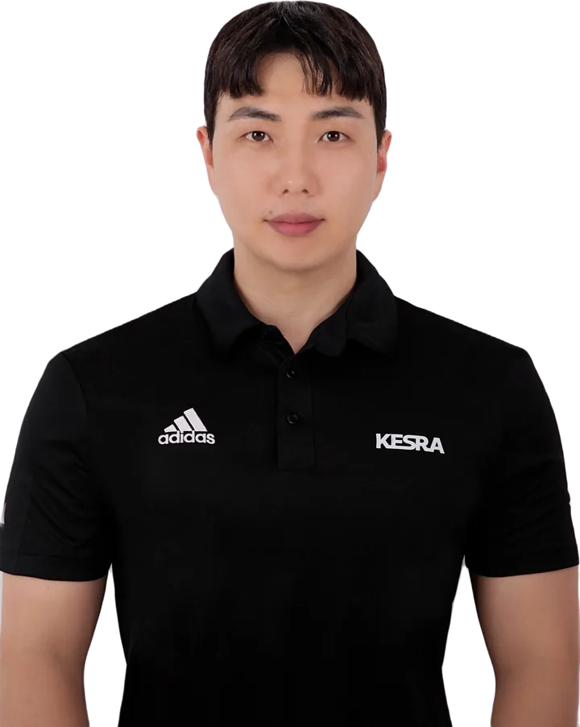

부산교대 재활PT · 원앤온리PT 부산교대점
통증을 참고 버티는 운동 말고,
편하게 움직이는 몸으로.
원앤온리PT 부산교대점 대표, 재활PT 트레이너 신동훈(동훈쌤)입니다. 아픈 곳만 보지 않고 움직임 전체를 평가해서, 다시 편하게 움직이고 하고 싶은 활동으로 돌아가도록 운동으로 돕습니다.

진행 방식
평가부터 시작해서, 내 몸에 맞는 운동까지
- 평가가동범위, 근력, 움직임 패턴 확인
- 원인 찾기통증 부위에 부담을 주는 이유 정리
- 내 몸에 맞는 움직임MAT, DNS, Motor Control로 지금 몸이 편하게 쓸 수 있는 움직임 찾기
- 운동찾은 움직임을 STC, 기능성 운동, 근력 운동으로 일상과 운동에서 버틸 힘으로 만들기. 통증이 줄어든 뒤에는 체력과 몸 만들기까지 이어갑니다
어디가, 언제부터 불편한지
편하게 말씀해 주세요
첫 시간은 상담과 움직임 평가부터 진행합니다.